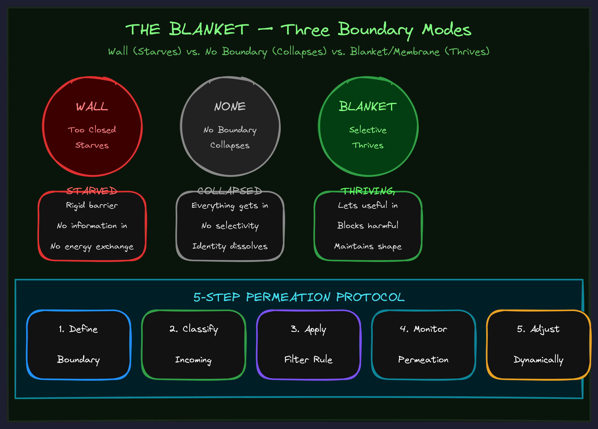

May 2026
The Blanket
Your system doesn't need a wall. It needs a membrane.

Walls Or Nothing
Someone builds a system — a team, a product, a framework, a life — and gets the boundaries wrong. They either lock everything down so tight that nothing useful gets in, or they leave everything wide open and drown in noise.
Walls or nothing. Fort Knox or open field. Those seem like the only two options.
They're not.
There's a third thing. Biology figured it out three billion years ago. Every living cell has it. Your skin has it. Your immune system runs on it. And it's the single most important structural element in any system that needs to survive contact with the outside world.
A blanket is a selective boundary — permeable enough to let in what nourishes, impermeable enough to keep out what destroys. It's not a wall. It's an active membrane that regulates exchange. The blanket is what makes a system alive rather than merely assembled.
The Cell Membrane Discovery
Consider the cell. The most fundamental unit of life. Every cell has a membrane, and that membrane is doing something profoundly sophisticated: it's making real-time decisions about what crosses the boundary.
Nutrients come in. Toxins get blocked. Signals pass through. Pathogens get rejected. The membrane isn't following a simple rulebook. It has recognition — it identifies what's at the boundary. Evaluation — it determines if that thing belongs. Decision — admit or reject. And learning — each encounter refines the process.
This is the blanket pattern. And it repeats everywhere:
- Biological membranes let nutrients in, keep pathogens out, maintain internal environment.
- Psychological boundaries let in intimacy and real feedback, keep out abuse and overwhelm.
- System boundaries accept valid inputs, reject malformed ones, maintain internal consistency.
- Framework boundaries admit applicable cases, exclude misapplications, preserve coherence.
In every case, the boundary isn't just present. It's operating. Filtering, selecting, regulating. The sophistication of that operation determines whether the system thrives or collapses.
How Blankets Are Born
You can't install a blanket from outside.
You can't sit down one afternoon and say "I need better boundaries, so here are the rules." That gives you a wall, not a blanket. Walls don't know what belongs and what doesn't because they haven't earned that knowledge. They just block everything — or they have holes in exactly the wrong places.
Blankets emerge. They form through accumulated experience:
- Each layer creates local boundaries. As you build, each component develops its own sense of what belongs and what doesn't.
- Boundaries connect as layers stack. Those local understandings start coordinating with each other.
- At a critical threshold, the blanket integrates. The accumulated boundary wisdom becomes a unified membrane.
- The blanket operates autonomously. It doesn't need you micromanaging every decision. It knows.
This is why the best leaders don't have rigid rules about what gets their attention. They have taste — an emerged blanket that instantly recognizes what belongs and what doesn't. That taste wasn't decided. It was built through thousands of boundary encounters.
Shield vs. Wall vs. Nothing
Three boundary modes. Two of them kill your system:
The Wall (Too Closed)
Blocks everything. No exchange. The system is "safe" but isolated. It can't get new information, can't adapt, can't grow. Eventually it starves. You've seen this in organizations that are so locked down they can't innovate, in people so defended they can't connect, in frameworks so rigid they can't handle new cases.
No Boundary (Too Open)
Blocks nothing. Everything enters. The system is overwhelmed immediately. Noise drowns signal. Bad inputs corrupt processing. The system collapses under the weight of everything it shouldn't be carrying. You've seen this in inboxes with no filters, in teams with no scope discipline, in people who say yes to everything.
The Shield / Blanket (Just Right)
Blocks what's harmful. Admits what's beneficial. Selective exchange. The system is protected and nourished. It can grow because it's getting what it needs. It can sustain because it's rejecting what would destroy it. This is the only mode that produces a living system.
Walls isolate and starve. No boundaries overwhelm and collapse. Shields select and enable thriving. The blanket is the middle path — and it's the only one that works long-term.
The Permeation Decision
Every time something arrives at your blanket — a new request, a piece of feedback, an opportunity, an interruption — the same protocol runs:
- Recognition. What IS this thing? Not what it claims to be — what it actually is. Look at the structure, not the packaging.
- Evaluation. Does it belong to what I'm building? Would admitting it serve the system? Would rejecting it lose something real? What's the cost of getting this wrong in either direction?
- Decision. Admit or reject. If clearly beneficial — let it through. If clearly harmful — block it. If ambiguous — lean conservative until the blanket has more data.
- Integration. If admitted, where does it go? What does it connect to inside? How does it change what's already there?
- Learning. What did this case teach the blanket? Does it refine the recognition patterns? Does the boundary get more sophisticated?
That fifth step is the difference between a static filter and a living membrane. The blanket gets better every time it makes a decision. Walls don't learn. Blankets do.
Why This Matters for Your Business
Every system you run has a boundary problem. Your team's attention is a finite resource with things constantly trying to cross the threshold. Your product has to decide what's in scope and what isn't. Your strategy has to choose what to pursue and what to ignore.
Most organizations handle this with walls (rigid policies that block useful things) or with no boundaries at all (everything is a priority, which means nothing is). Neither works.
The organizations that thrive are the ones with sophisticated blankets — boundaries that can tell the difference between signal and noise in real time and keep getting better at it.
AI agents, deployed well, can be part of this blanket. They can do the recognition and evaluation at scale — triaging inputs, filtering noise, surfacing what actually needs human attention. But only if they're built with the blanket pattern. An AI that blocks everything useful is a wall. An AI that lets everything through is nothing. An AI that selectively filters and learns from each decision — that's a blanket.
The question isn't "do we need boundaries?" The question is: are your boundaries walls that starve you, or blankets that let you thrive?